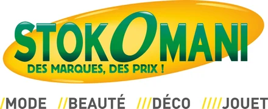

LAURENT BRIEU

Développeur web
freelance
Je crée et refonds des sites vitrines, des boutiques en ligne et des applications web sur mesure.
Parlons de votre projet- 17+Années d’expérience
- 30+Clients différents
- 34Réalisations
Comment je peux vous aider
Créer un site, reprendre un projet existant ou développer une fonctionnalité : voici comment je peux intervenir.
Création de site vitrine & e-commerce
Création de sites vitrines et de boutiques en ligne sur mesure avec Symfony, ma technologie principale aujourd’hui. Je vous accompagne du cadrage du projet à la mise en ligne.
Refonte de sites et migration de données
Je reprends votre site existant, modernise son code et migre vos données, vos contenus ou votre catalogue produits.
Développement sur mesure & Modules
Je développe des fonctionnalités sur mesure pour votre site ou votre application, selon les besoins de votre activité. Cela peut aller d’un système de réservation ou de paiement à un espace membre avec abonnement, en passant par l’intégration de vos outils et l’automatisation de vos tâches métier.
Formation, Maintenance & Suivi
Formation personnalisée à l'administration du site pour vous aider à gérer vos contenus, complétée par un suivi technique et des mises à jour continues.
Un interlocuteur du premier échange à la mise en ligne
Je suis votre contact direct tout au long du projet. Basé à Cergy-Pontoise, je travaille à distance en France et à l’international.
Cadrer le projet
On commence par vos objectifs, votre budget et vos contraintes. Je vous propose un périmètre et on décide ensemble des priorités.
Préparer la mise en ligne
Vous voyez le site avancer et validez les étapes importantes. À la livraison, je vous forme pour que vous puissiez gérer vos contenus au quotidien.
Garder un contact après la livraison
Je peux ensuite prendre en charge les mises à jour, la maintenance et les nouvelles fonctionnalités. Plusieurs clients me confient leurs projets depuis des années.
Ils m’ont confié leurs projets
Création de boutique, reprise de catalogue ou développement d’une plateforme. Découvrez ce que j’ai livré pour chaque projet.
Voir les réalisations


Parlons de votre prochain projet
Que vous ayez besoin d'un nouveau site vitrine, d'une boutique en ligne, d'une reprise de catalogue ou d'un développement spécifique, discutons de vos objectifs.